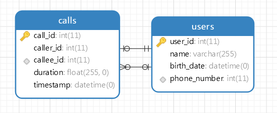

Bài 4: Thiết kế 1 cơ sở dữ liệu lưu trữ thông tin viễn thông bao gồm các yêu cầu sau:
Yêu cầu:
Users
Calls
Users.phone_number)Users.phone_number)Mối quan hệ giữa Users và Calls là mối quan hệ "một-nhiều", vì mỗi người dùng có thể thực hiện nhiều cuộc gọi.

SELECT u.user_id, u.name, SUM(c.duration) AS total_duration
FROM Users u
JOIN Calls c ON u.phone_number = c.caller_id OR u.phone_number = c.callee_id
WHERE MONTH(c.timestamp) = MONTH(CURRENT_DATE - INTERVAL 1 MONTH)
AND YEAR(c.timestamp) = YEAR(CURRENT_DATE - INTERVAL 1 MONTH)
GROUP BY u.user_id
ORDER BY total_duration DESC
LIMIT 3;
Để thực hiện truy vấn này, chúng ta cần xác định giá trị thứ hai lớn nhất và sau đó tìm người dùng có tổng thời lượng cuộc gọi bằng giá trị đó.
SELECT u.user_id, u.name, SUM(c.duration) AS total_duration
FROM Users u
JOIN Calls c ON u.phone_number = c.caller_id OR u.phone_number = c.callee_id
GROUP BY u.user_id
HAVING total_duration = (
SELECT DISTINCT total_duration
FROM (
SELECT SUM(c.duration) AS total_duration
FROM Calls c
JOIN Users u ON c.caller_id = u.phone_number OR c.callee_id = u.phone_number
GROUP BY u.user_id
ORDER BY total_duration DESC
LIMIT 1 OFFSET 1
) AS second_highest
)
ORDER BY total_duration DESC;